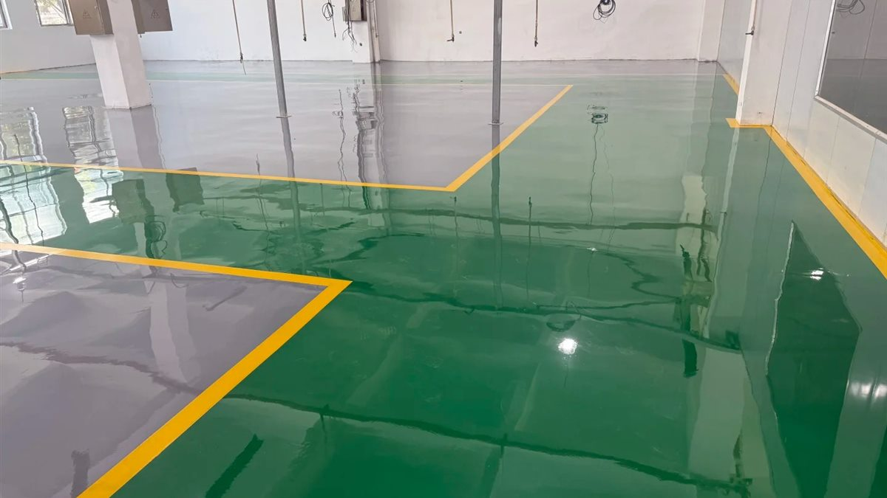
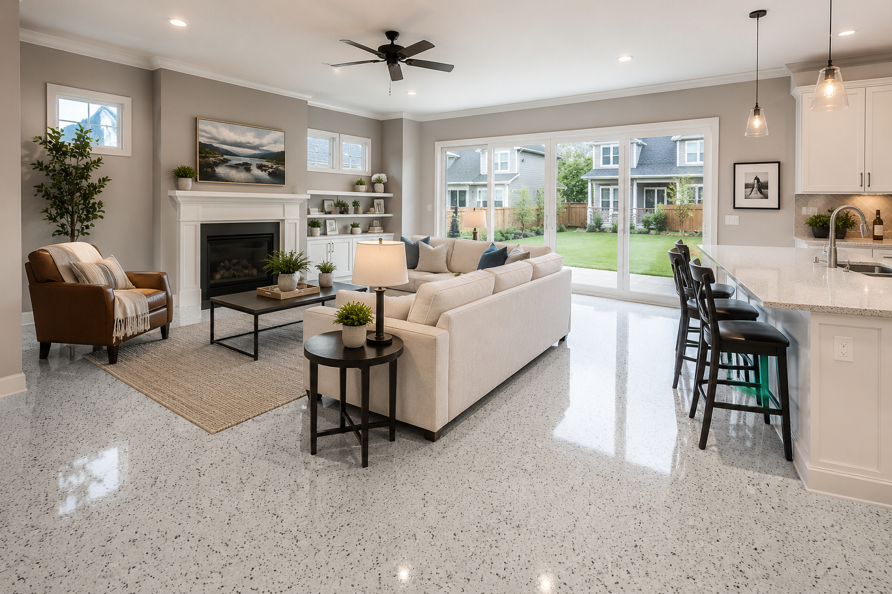
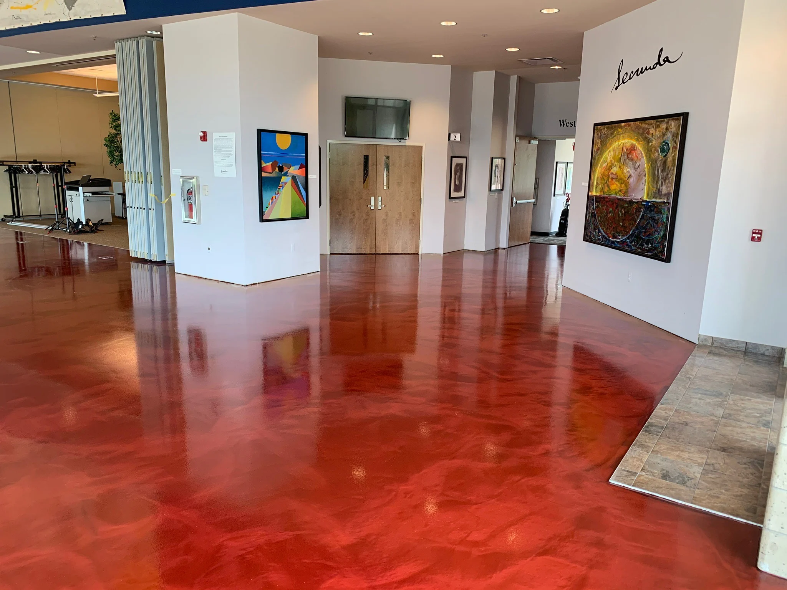
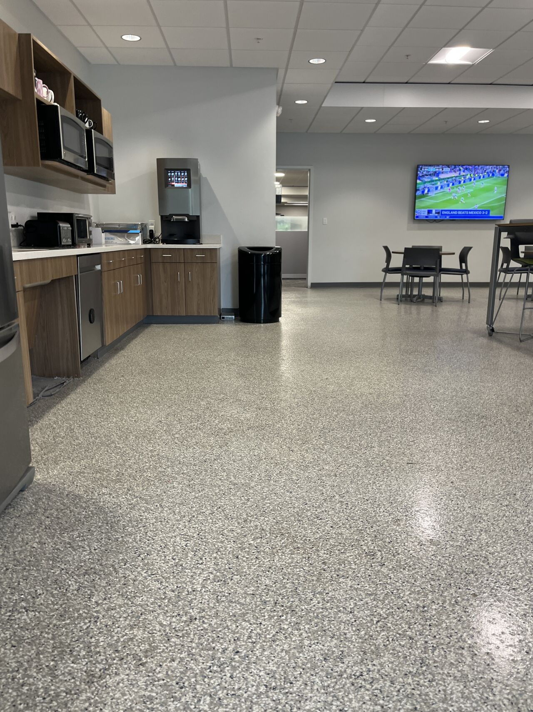

Match finish and build-up
to the operating environment.
Traffic, flatness, hygiene, appearance, slip profile and cleaning regime determine which epoxy route is most appropriate.

Epoxy Thin-Coat Flooring
A cost-conscious seamless coating for factories, warehouses and general production areas.
View system →Epoxy Self-Leveling Flooring
A high-build, mirror-smooth finish for clean production, electronics, pharmaceutical and precision facilities.
View system →
Epoxy Color-Sand Self-Leveling
Self-leveling epoxy enhanced with colored aggregate for visual depth and a premium seamless finish.
View system →
Metallic Epoxy Flooring
Clear epoxy blended with pearlescent pigments and hand-worked to create one-of-a-kind visual effects.
View system →
Epoxy Flake Flooring
A flake-broadcast surface combining practical wear hiding, texture and customizable color blends.
View system →Performance first.
Appearance second.
Confirm substrate moisture, traffic, cleaning chemicals, finish texture and downtime before locking the system specification.